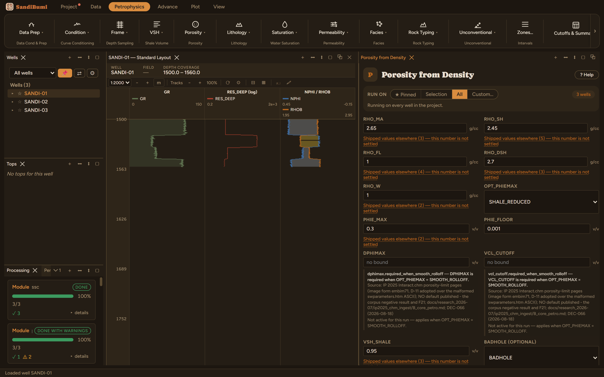

Density porosity with shale correction. Effective porosity reads the density log between the matrix and fluid densities, minus the shale term; total porosity adds the shale's own porosity back. Above 95% VSH the sample is treated as shale.
PHIE = (RHO_MA − RHOB)/(RHO_MA − RHO_FL) − VSH·(RHO_MA − RHO_SH)/(RHO_MA − RHO_FL) PHIT = PHIE + VSH·PHIT_SH PHIT_SH = (RHO_DSH − RHO_SH)/(RHO_DSH − RHO_W)
Density porosity is where interpretation porosity usually starts: one log, one matrix, one fluid. This walkthrough assumes a VSH curve already exists — porosity modules consume VSH, so a VSH chapter's run comes first (see VSH from Gamma Ray).
Open Petrophysics → Porosity → Porosity from Density. Most of this pane ships filled, each value with its citation printed under the field — matrix 2.65 (three installed tools agree), fluid 1.0, dry-shale 2.70, water 1.0, the 0.3 PHIE cap and the 0.001 floor. The one number the pane refuses to guess is RHO_SH, the shale density — a property of your shale. For this run:

On these wells: 3 clean · 0 degraded · 0 failed. The run writes PHIE (the shale-corrected effective porosity) and PHIT (with the shale's own porosity added back), plus the unlimited PHIE_DEN beside the limited curve — the apparent and the corrected answer keep different names, the same rule VSH_GR follows. Above 95% VSH the sample is treated as shale outright.
PHIE from this run is what the Porosity Ceiling chapter caps, and what the saturation chapters consume.
Everything below is generated from the same manifest the application builds this module’s pane from — descriptions, defaults, sources, ranges and pre-run checks here are exactly what the running application enforces.
PHIE = (RHO_MA - RHOB)/(RHO_MA - RHO_FL) - VSH*(RHO_MA - RHO_SH)/(RHO_MA - RHO_FL). PHIT = PHIE + VSH*PHIT_SH, where PHIT_SH = (RHO_DSH - RHO_SH)/(RHO_DSH - RHO_W). Above 95% VSH the sample is treated as shale.
| Role | Description | Resolves to | Required | Notes |
|---|---|---|---|---|
| BADHOLE | Bad-hole flag (flagged samples excluded, exclusion recorded) | BADHOLE | no | — |
| GAS_FLAG | Gas-crossover flag from condflag (provenance record only - never a correction) | XOVER_FLAG | no | — |
| COAL_FLAG | Coal flag from condflag (flagged samples blanked - coal apparent porosity is never rock porosity) | COAL_FLAG | no | — |
| TIGHT_FLAG | Tight flag from condflag (indicator only - never alters an output) | TIGHT_FLAG | no | — |
| COND_FLAG | Conditioning flag from condflag (indicator only - never alters an output) | COND_FLAG | no | — |
| RHOB | Density log | RHOB | yes | — |
| VSH | Limited volume of shale | VSH | yes | accepts quantity kind: VSH |
Whole-well defaults; per-zone values from the Zones pane take precedence inside their zones (except where a parameter is marked one-value-per-well).
Matrix density
matrix_density); the pane lists them with sources at the point of choice.Shale density
shale_density); the pane lists them with sources at the point of choice.Fluid density
fluid_density); the pane lists them with sources at the point of choice.Dry shale density
dry_shale_density); the pane lists them with sources at the point of choice.Formation water density
formation_water_density); the pane lists them with sources at the point of choice.Maximum allowed PHIE
max_effective_porosity); the pane lists them with sources at the point of choice.Floor applied to limited PHIE where the limit binds
Smooth roll-off increment above PHIE_MAX (IP DeltaPhiMax)
dphimax.required_when_smooth_rolloff — DPHIMAX is required when OPT_PHIEMAX = SMOOTH_ROLLOFF. Applies when: [object Object].
Smooth roll-off onset shale volume (IP VclCutoff)
vcl_cutoff.required_when_smooth_rolloff — VCL_CUTOFF is required when OPT_PHIEMAX = SMOOTH_ROLLOFF. Applies when: [object Object].
High-shale kill threshold (at or above it: PHIE = 0, PHIT = PHIT_SH)
high_shale_branch_threshold); the pane lists them with sources at the point of choice.PHIE limiting method
SHALE_REDUCEDMAXIMUMSMOOTH_ROLLOFFSHALE_REDUCED| Name | Description |
|---|---|
| PHIE_DEN | PHIE from density (unlimited) |
| PHIT_DEN | PHIT from density (unlimited) |
| PHIE | Limited effective porosity |
| PHIT | Limited total porosity |